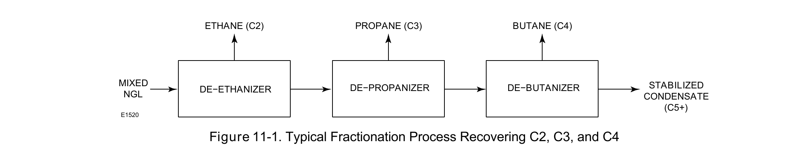

Distillation-Column Control

Fractionation separates a mixed hydrocarbon stream into progressively lighter/heavier products through a sequence of columns — deethanizer, depropanizer, debutanizer — each column pulling off one specific product.
Fisher Control Valve Sourcebook — Oil & Gas (© 2013 Fisher), Chapter 11 "Fractionation," Figure 11-1 (drawing number E1520, printed p. 11-2) — "Figure 11-1. Typical Fractionation Process Recovering C2, C3, and C4." — used directly. Component Index: ogas-cmp-fractionation-process-flow.